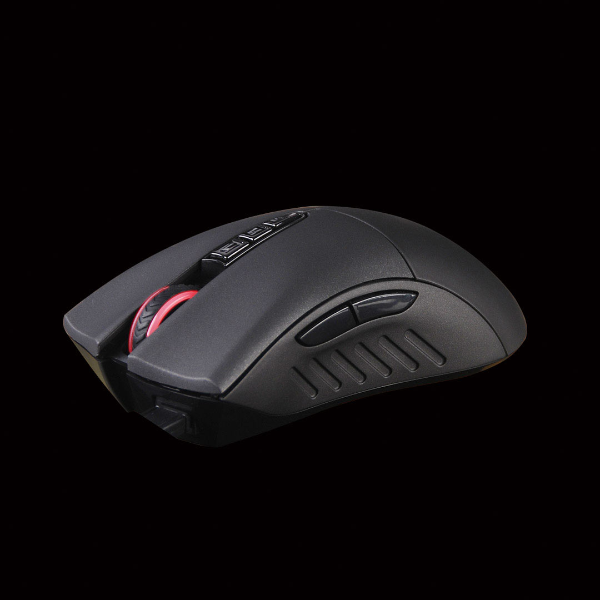

Особенности: Мышь с высоким разрешением AVAGO A3050 HD optical Уникальная запатентованная "Защита беспроводной связи" возможность использования мыши как проводной (во время зарядки). Уникальная технология "Ahead" сокращает время отклика мыши до 1 мс, в то время как у обычной мыши - 18 мс. Отсутствие "Случайных Двойных кликов" сохранит долговечность кнопок мыши Предусмотрена "Простой, Более сложный и Высокий" уровень сложности для всех игр. Core1 подойдет для ролевой игры, Core2 - для FPS игр, а Core3 - для более продвинутых FPS игр (Ultra-core 3 приобретается дополнительно) Левой кнопкой переключайте оружие, а кнопками 1, N и 3 - выстрелы. "один выстрел, стрейф или 3-ой выстрел" для стрельбы в любой игре! 8 Программируемых кнопок - для игроков FPS с тремя режимами стрельбы на левую кнопку Металические ножки мыши - Прочные, гладкие, скользящие. На 20% больше скольжения.